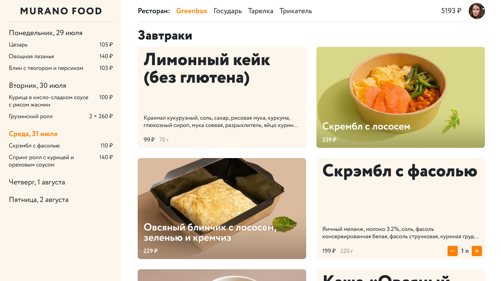
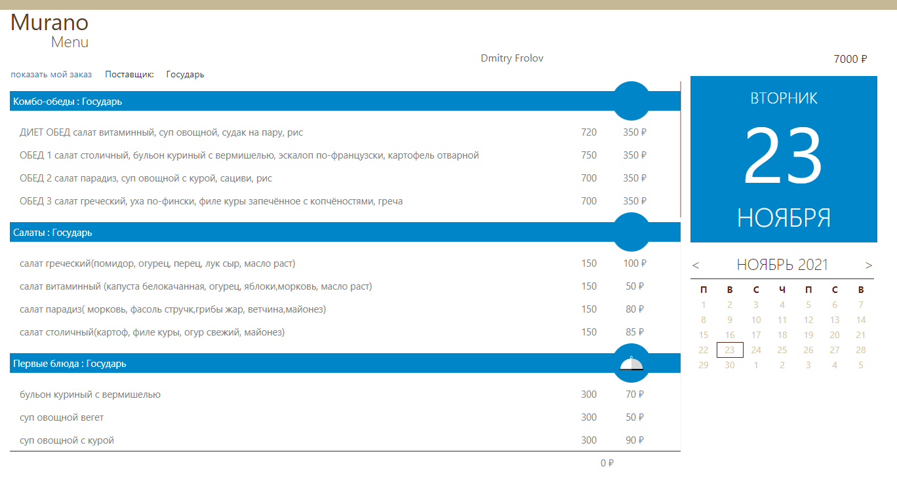
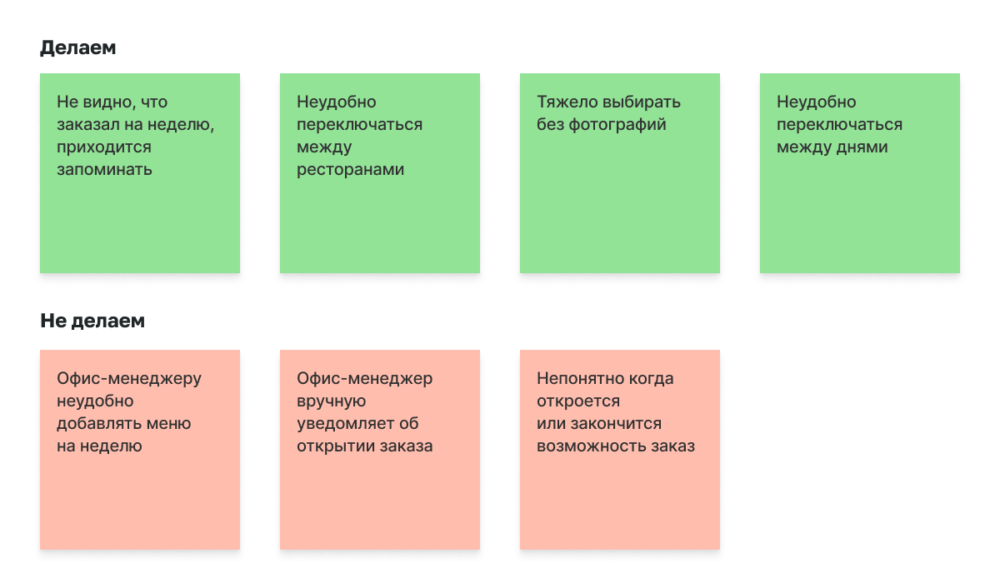
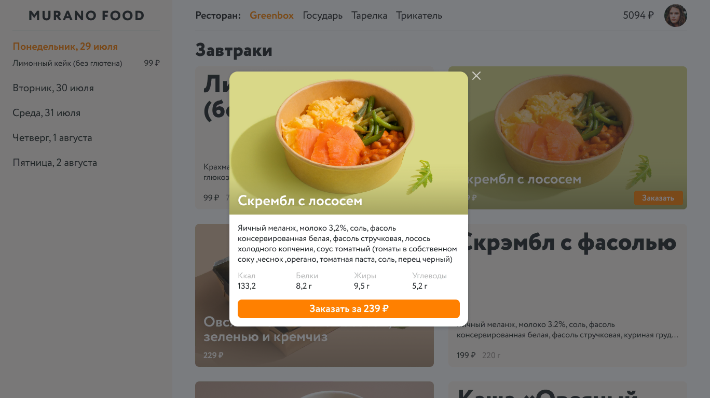
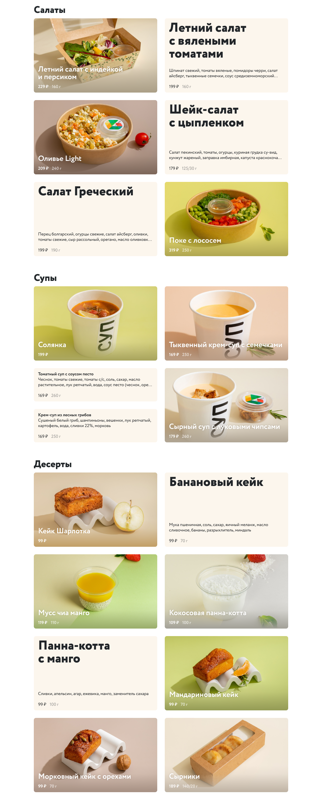

Murano Food is the intranet service for ordering lunches from selected restaurants. Every Monday, employees order lunches for a week with the money they have gotten from the employer.

The previous version worked badly and was useless. Appearance didn't associate with food.

I have conducted interviews with users, collected problems and prioritized them.

In the new version, instead of the calendar, there is sidebar with order for the week. Restaurants are now visible and you can switch between them with a single click.
The ingredients and nutrition facts are displayed in the dialogue.

Based on the available information about the dish and the nearest cards, a special algorithm chooses the appearance and location of the dish card.

frolov.work 2024